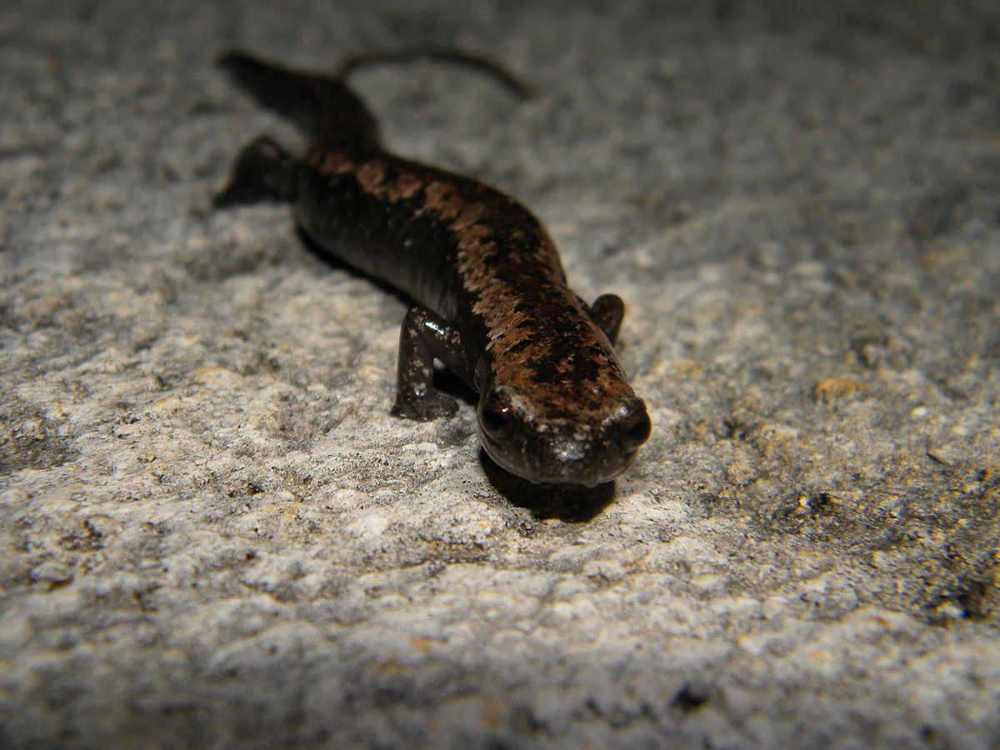

Aves
Reptiles
Mamiferos
Anfibios
Peces
Carpintero Cheje
Cocodrilo de pantano
Mapache
Salamandra Lengua de Hongo Mexicana
Pez beta
Melanerpes aurifrons
Crocodylus moreletii
Procyon lotor
Bolitoglossa mexicana
Betta splendens

Loro Frente Blanca
Cocodrilo de Río
Coatí Yucateco
Salamandra Lengua de Hongo Yucateca
Pez Guppy
Amazona albifrons
Crocodylus acutus
Nasua narica yucatanica
Bolitoglossa yucatana
Poecilia reticulata
Coa Cabeza Negra
Culebra Rayada Yucateca
Tigrillo
Rana Cabeza de Pala
Pez Tetra Neon
Trogon melanocephalus
Coniophanes schmidti
Leopardus wiedii
Triprion petasatus
Paracheirodon innesi